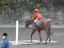
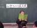
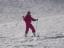

由起子の写真(No581-585)
（写真をクリックすると大きくなります）次へ→
2009年3月1日 18時53分撮影
我が家のお雛様はとても綺麗なお顔をしているのだ。ずっと観ていても飽きません。
お雛様はユッコの守り神です。
2009年2月22日 15時59分撮影
初心者障害のレッスンを受けれるようになりました。
上手になりたいけど、馬に飛んでもらうのは、なかなか難しいです。
2009年2月20日 14時11分撮影
４年生は１０歳と言うことで、２分の１（１０歳）の成人式 発表会。
自分の生まれた頃の話や家族のことを話す予定が、涙ポロポロで話せませんでした。
2009年2月14日 14時54分撮影
パパと２人で日帰りスキー。
この冬サホロに続いて２回目のスキーだから上手く滑れてるよ。2009年1月11日 8時15分撮影
あけましておめでとう！我が家の氏神さん（等彌神社）へ初詣。
ママのお祈りは「今年も家族みんなの健康と幸福をお守りください。」